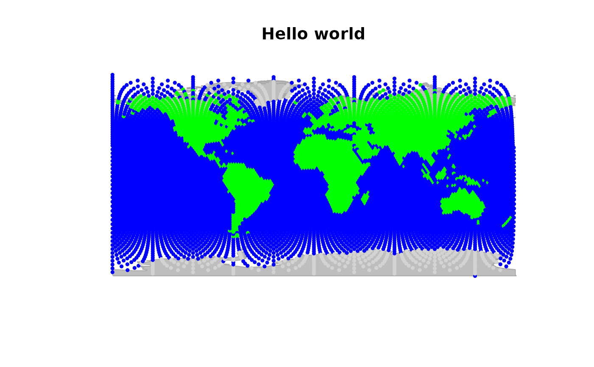
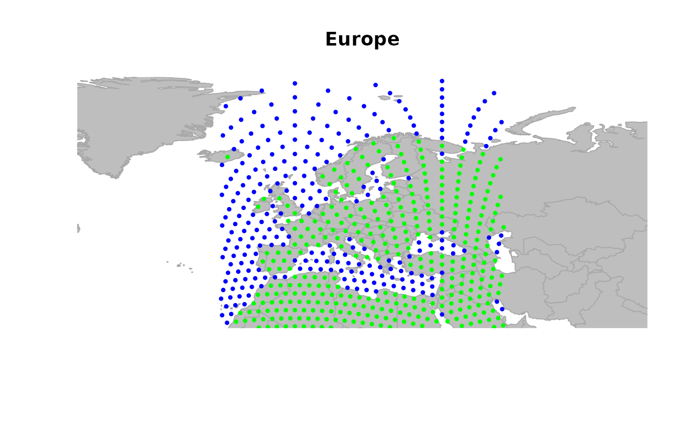
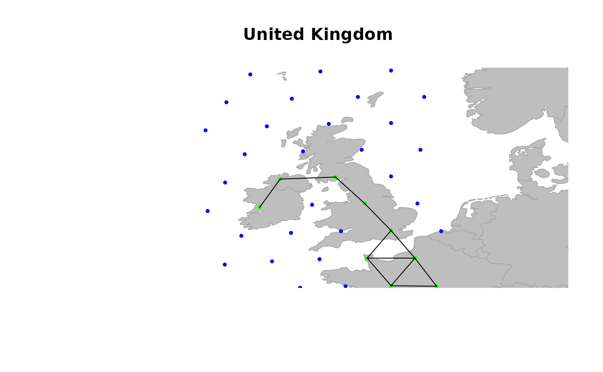
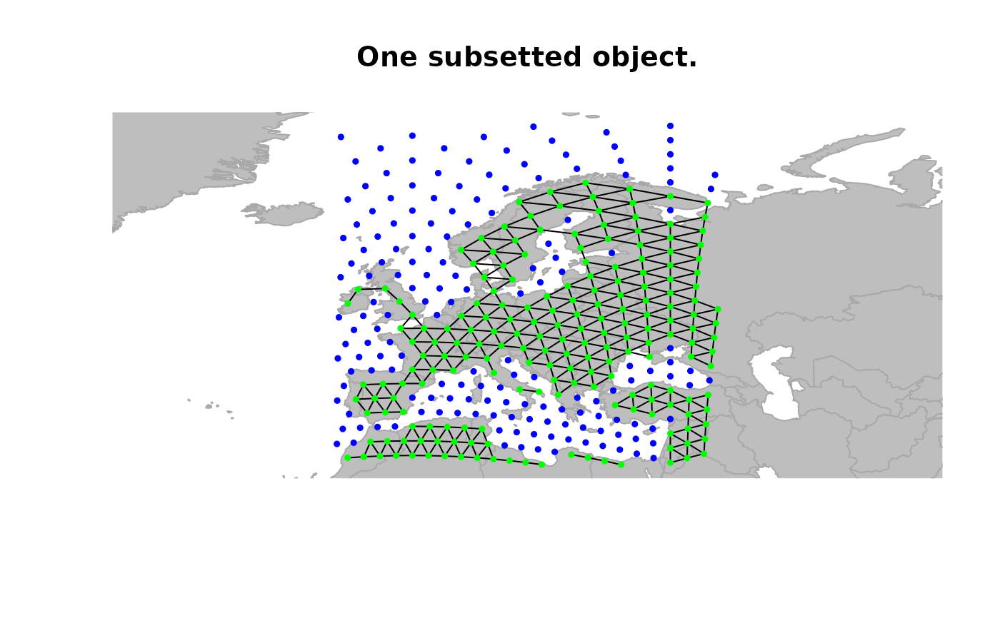
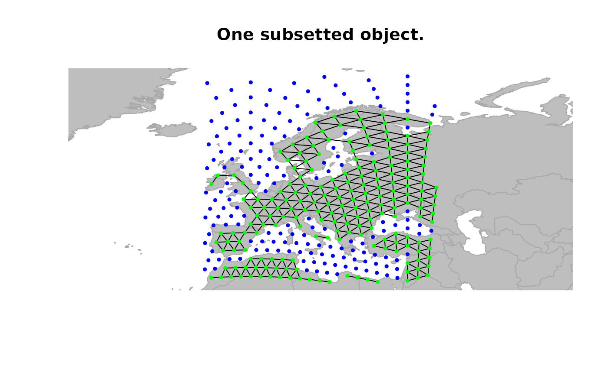

The datasets 'rawgraph.10k', 'rawgraph.40k', 'worldgraph.10k', and
'worldgraph.40k' are geographic graphs (gGraph objects) of the
world, with respective resolutions of 10,242 and 40,962 vertices.
Format
worldgraph.10k and worldgraph.40k are
gGraph objects with the following specificities:
- @nodes.attr\$habitat
habitat corresponding to each vertice; currently 'land' or 'sea'.
- @meta\$color
a matrix assigning a color for plotting vertices (second column) to different values of habitat (first column).
Details
'rawgraph's are raw graphs as obtained directly from the method provided in
references.
'worldgraph's are 'rawgraph's that have been modified manually to rectify
connectivity between edges at some places. The most noticeable change is that
all edges involving sea vertices have been removed.
'worldshape' is a shapefile of countries of the world (snapshot from 1994).
References
=== On the construction of the graph ===
Randall, D. A.;
Ringler, T. D.; Heikes, R. P.; Jones, P. & Baumgardner, J. Climate Modeling
with Spherical Geodesic Grids Computing in science & engineering,
2002, 4: 32-41.
Examples
worldgraph.10k
#>
#> === gGraph object ===
#>
#> @coords: spatial coordinates of 10242 nodes
#> lon lat
#> 1 -180.0000 90.00000
#> 2 144.0000 -90.00000
#> 3 -33.7806 27.18924
#> ...
#>
#> @nodes.attr: 1 nodes attributes
#> habitat
#> 1 sea
#> 2 sea
#> 3 sea
#> ...
#>
#> @meta: list of meta information with 2 items
#> [1] "$colors" "$costs"
#>
#> @graph:
#> A graphNEL graph with undirected edges
#> Number of Nodes = 10242
#> Number of Edges = 6954
## plotting the object
plot(worldgraph.10k, reset = TRUE)
title("Hello world")

## zooming in
geo.zoomin(list(x = c(-12, 45), y = c(33, 75)))
title("Europe")

geo.zoomin(list(x = c(-12, 2), y = c(50, 60)))
plotEdges(worldgraph.10k)
title("United Kingdom")

## zooming out
# geo.zoomout() # needs clicking on device
geo.zoomin(list(x = c(-6, 38), y = c(35, 73)))
title("Europe")
 ## defining the subset of visible points
x <- worldgraph.10k[isInArea(worldgraph.10k)]
plot(x, reset = TRUE, edges = TRUE)
title("One subsetted object.")

if (FALSE) {
## interactive zooming
geo.zoomin()
}
## defining the subset of visible points
x <- worldgraph.10k[isInArea(worldgraph.10k)]
plot(x, reset = TRUE, edges = TRUE)
title("One subsetted object.")

if (FALSE) {
## interactive zooming
geo.zoomin()
}